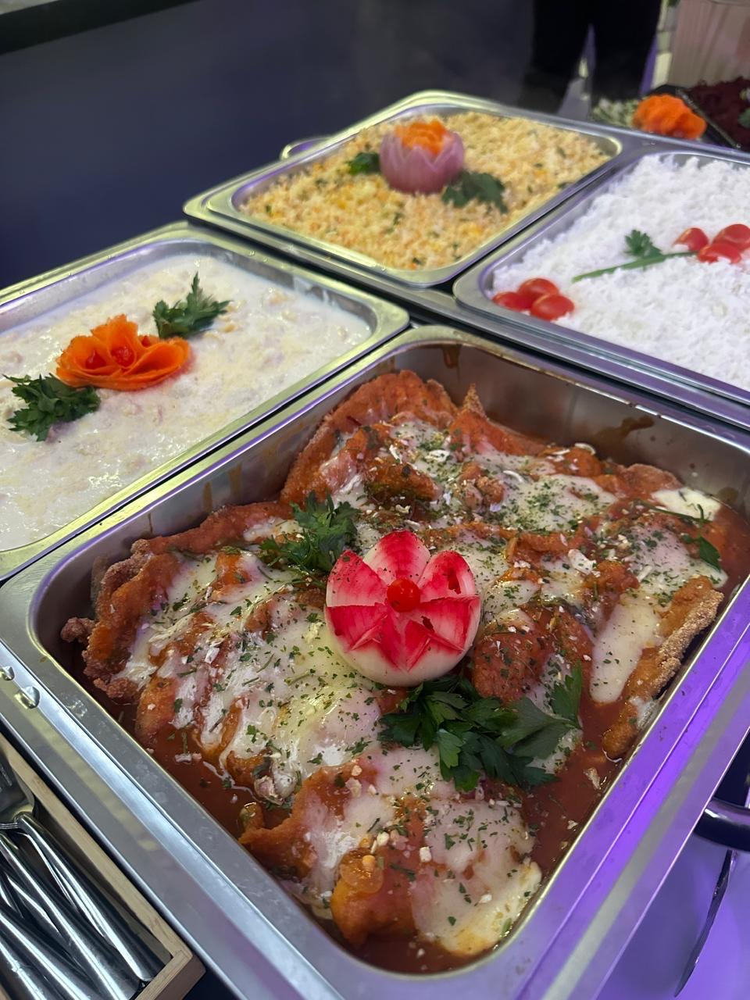
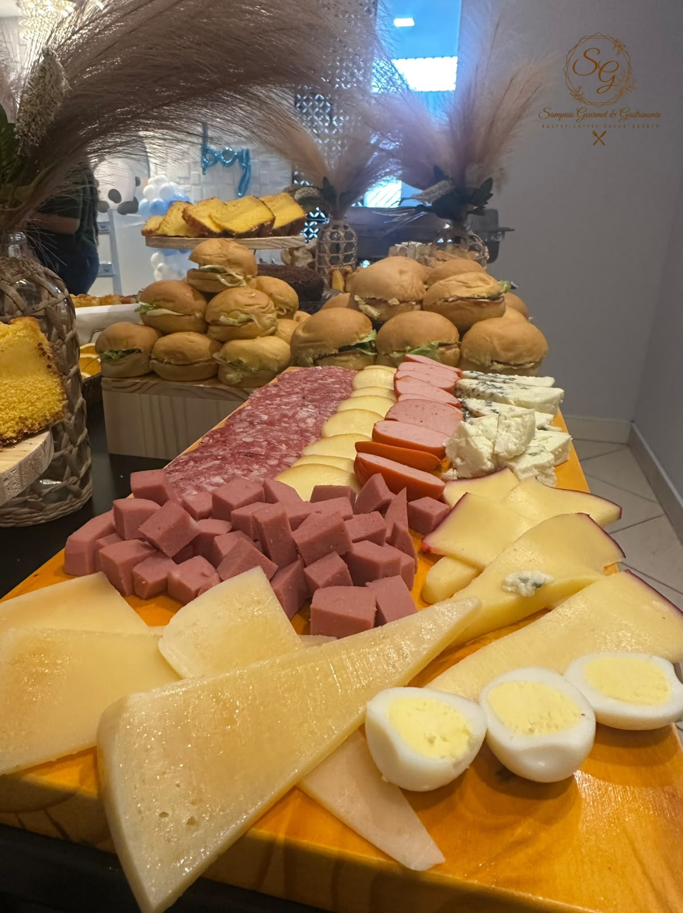

Nossa história...
Toda celebração reúne pessoas, desperta emoções e cria lembranças. Queremos fazer parte da sua história com sabores e cuidado em cada detalhe.
A Sampaio Gourmet & Gastronomia nasceu do desejo de levar boa comida e carinho aos momentos especiais. Nossa proposta é unir sabor, organização e atenção em cada serviço, de acordo com o estilo da sua celebração.
Cada evento tem seu ritmo e sua essência. Por isso, cuidamos dos detalhes para que a experiência seja acolhedora do começo ao fim. Enquanto preparamos tudo com dedicação, você aproveita a companhia de quem faz parte da sua vida.
Das pequenas reuniões às grandes festas, levamos à sua mesa o prazer de receber bem. Conte com nossa equipe para celebrar com sabor, cuidado e elegância.



